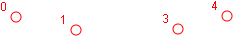
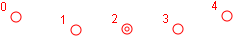
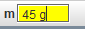
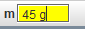
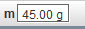
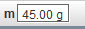
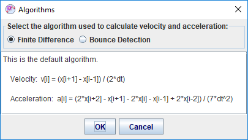

A point mass track represents a mass moving as a point-like object. It is the most fundamental model of a moving inertial object. Point masses are the building blocks with which more complex and realistic models of physical systems are constructed in classical physics.
Don't skip frames--if you do, velocities and accelerations cannot be determined at the data gaps. If you do skip frames, the Datatable view can help you find and/or autofill them. See Autofilling gaps for more information.
Point masses have visible trails by default. Hide or shorten the trails if desired using the trails button  on the toolbar.
on the toolbar.
To edit a marked step, select it and drag or use the arrow keys on the keyboard to nudge it one pixel at a time. Very fine control is possible at a high zoom level. You can also enter world coordinates directly in the toolbar fields to assign a known position.

When steps are skipped during marking it creates gaps in the data where velocities and accelerations cannot be determined. Turning on Autofill can automatically fill these gaps using linear interpolation.
To turn on Autofill you must first enable it in the preferences dialog (Edit|Preferences, Actions tab). Once enabled, turn it on by either (a) pressing the A key, or (b) checking the Autofill box in the Datatable view. Pressing the A key repeatedly toggles autofill on and off.
When autofill is on, gaps are filled by linear interpolation between marked steps. This is equivalent to assuming the track moves with constant velocity during the gap. Clicking or dragging a marked step at either end of a gap automatically updates the autofilled steps in that gap.
When autofill is on, autofilled steps are drawn with an inner circle to distinguish them from marked steps. When autofill is off the inner circles are not drawn. The images below show a gap before and after being autofilled.


A newly created point mass is given a default mass of 1.0 mass unit (kg by default). Enter a new mass (m >= 0) in the mass field on the toolbar to change the mass. You can change the mass unit at the same time by including it when entering the new mass. In this example, the mass unit is changed to g (grams) in all mass-dependent fields, table columns and plots. Note: all point masses in a given tab have the same units, you cannot have one in kg and another in g.

 

 

Velocities and accelerations are calculated from the position-time data using the Finite Difference algorithm shown below. Subscripts refer to step numbers and dt is the time between steps in seconds. The equations are shown only for the x-components; substitute y for x to obtain y-components.
If steps are skipped when marking a point mass, velocities and accelerations cannot be calculated where the required position data is missing. This means velocities are missing both before and after a missing step, and accelerations are missing for 2 steps before and after the missing step.
If you know the point mass bounces off a surface you may wish to use the Bounce Detection algorithm which smooths velocities and accelerations but also detects sudden changes in velocity. Caution: this works very well for bounces but may produce artifacts with some motion. For more information, see http:gasstationwithoutpumps.wordpress.com/2011/11/08/tracker-video-analysis-tool-fixes/

Note: there are many other finite difference algorithms. Tracker's algorithms define the velocity for a step to be the average velocity over a 2-step interval, and the acceleration to be the second derivative of a parabolic fit over a 4-step interval, with the step at the center. Tracker's acceleration algorithm is less sensitive to position uncertainties than others..
Toggle the vector visibility for all point masses by clicking the velocity button  or acceleration button
or acceleration button  on the toolbar. The vectors are initially attached to their positions (i.e. the tail of the velocity vector for step n is at the step n position).
on the toolbar. The vectors are initially attached to their positions (i.e. the tail of the velocity vector for step n is at the step n position).

Note: Some motion vectors, especially accelerations, may be very short. You can artificially "stretch" them by clicking on the stretch button  on the toolbar and selecting a stretch factor from the dropdown menu.
on the toolbar and selecting a stretch factor from the dropdown menu.
You can change the footprint of a motion vector using the appropriate footprint item on its track button. The ”big arrow” footprint is particularly useful for large classroom presentations.
You can set different colors for the velocity and acceleration vectors using the appropriate color item on the track button. Motion vector colors are the same as the position by default.
Select a vector by clicking near its center to display its components on the toolbar.

Drag a vector to detach it from its position and move it around. Drop the vector with its tail near its position to reattach--it will snap to the position.


A vector will also snap and attach to the origin when the axes are visible. This is useful for estimating and visualizing its components.

Attach all vectors quickly to the origin or positions with the Tails to Origin or Tails to Position items in the point mass track menu.
Click the dynamics button  on the toolbar to multiply all velocity and acceleration vectors by their mass. This changes them to momentum and net force vectors, respectively.
on the toolbar to multiply all velocity and acceleration vectors by their mass. This changes them to momentum and net force vectors, respectively.


Vectors can be linked tip-to-tail to visually determine their vector sum. To link vectors, drag and drop one with its tail near the tip of the other. The dropped vector will snap to the tip when it links. You may continue to link additional vectors in the same way to form a chain.

Note: Tracker makes no attempt to check whether it is mathematically appropriate or physically meaningful to link a given set of vectors--it simply makes it possible.
When you drag the first vector (i.e. the vector with the unlinked tail) in a chain, the chain moves as a unit and the vectors remain linked. When you drag any vector further up the chain, however, it detaches and "breaks" the chain.